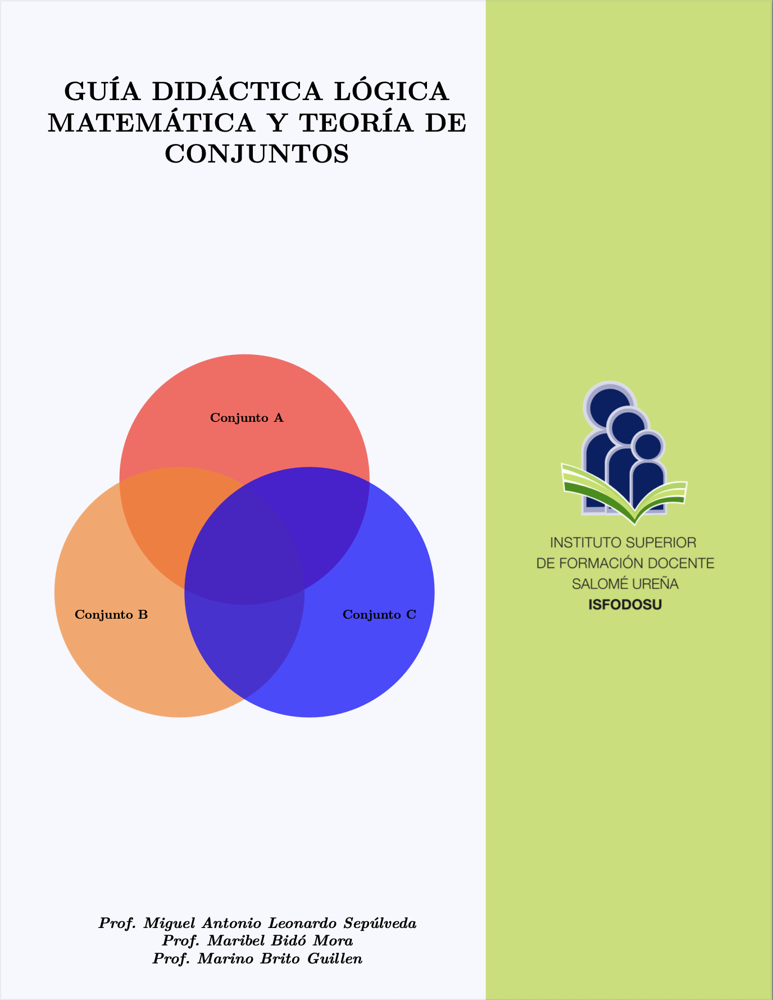
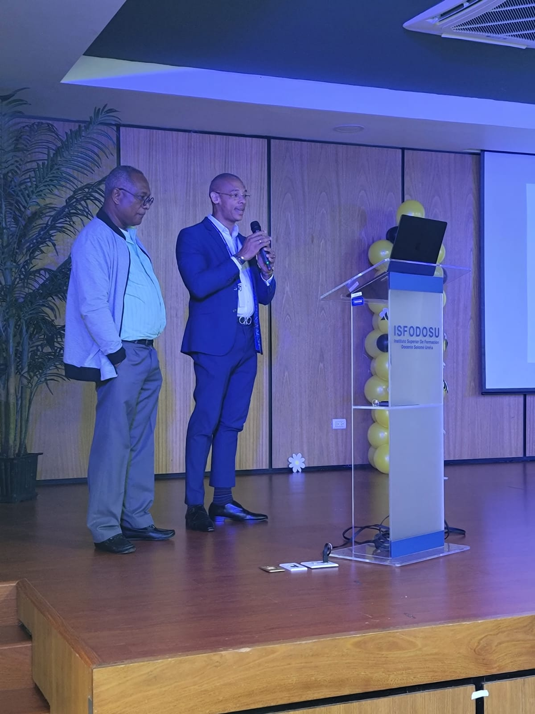
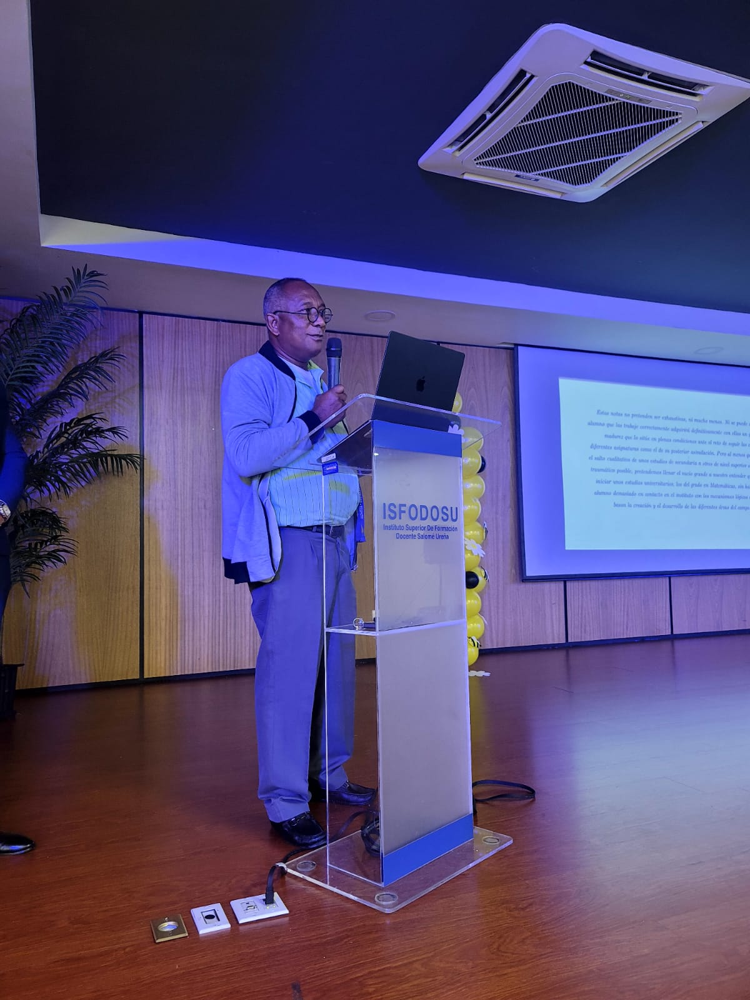

Defensa doctoral de Antmel Rodríguez Cabral
Máxima calificación otorgada por jurados internacionales
El Grupo de Investigación El Kernel celebra la reciente defensa de tesis doctoral de Antmel Rodríguez Cabral, quien culminó exitosamente un proceso de investigación doctoral sustentado en publicaciones científicas de alto impacto y en resultados vinculados al análisis de métodos iterativos, estabilidad, dinámica real y compleja, y resolución de sistemas no lineales.
Su defensa fue evaluada con la máxima calificación otorgada por el jurado internacional, reconociendo la calidad teórica, la rigurosidad metodológica y la pertinencia científica del trabajo.
Defensa doctoral de José Alberto Reyes Reyes
Excelencia investigativa en métodos iterativos
El Grupo de Investigación El Kernel felicita a José Alberto Reyes Reyes por la defensa exitosa de su tesis doctoral, desarrollada en el área de métodos iterativos, análisis de convergencia y estabilidad para ecuaciones no lineales.
La defensa doctoral fue reconocida con la máxima calificación otorgada por jurados internacionales, evidenciando la solidez científica de sus publicaciones, el alcance de sus resultados y su contribución a la investigación matemática contemporánea.

Nueva publicación de Antmel Rodríguez
2025
Se publicó el artículo “About the stability of self-accelerating parameters in vectorial iterative methods without memory” en Journal of Computational Methods in Sciences and Engineering. El trabajo estudia la estabilidad de familias con parámetros autoacelerados en métodos iterativos sin memoria usando dinámica discreta, diagramas de bifurcación y planos dinámicos.

Nueva publicación de libro
17 de junio de 2025
Se lanzó “Guía Didáctica de Lógica Matemática y Teoría de Conjuntos”, de Miguel Leonardo y Marino Brito Guillén. Incluye ejercicios resueltos, actividades guiadas y recursos didácticos para bachillerato y nivel universitario inicial.



Nuevo artículo publicado en Axioms
2024
“Stability Analysis of a New Fourth-Order Optimal Iterative Scheme for Nonlinear Equations”. El trabajo presenta un análisis de estabilidad y convergencia de un esquema iterativo óptimo de cuarto orden, con aplicaciones al estudio de ecuaciones no lineales.
Leer artículoPublicación en Mathematische Nachrichten
2025
“Groups with triangle-free graphs on 𝒑-regular classes”. Resultados en teoría de grupos finitos con propiedades combinatorias de clases p-regulares y sus grafos asociados.
Ver publicaciónDefensa de tesis doctoral de Marc-Kelly Jean Philippe
junio de 2025
Marc-Kelly defendió con éxito su tesis doctoral en teoría de grupos. El trabajo explora estructuras asociadas a clases p-regulares y relaciones con grafos libres de triángulos, aportando nuevas técnicas combinatorias y resultados de conectividad.
¿Quieres que tu actividad aparezca aquí? Escríbenos a mleonardo@itla.edu.do